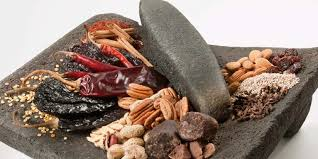
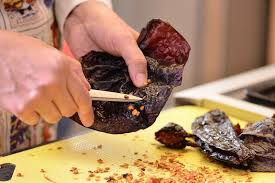
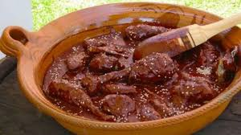
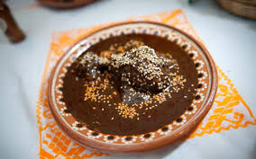

MOLE ROJO
Ingredientes
- 50 gramos de pasas
- 2 bolitas de chocolate
- 3 jitomates
- 1 ½ rollos de galleta maría
- 40 gramos de orégano
- 40 gramos de tomillo
- 30 gramos de almoraduz
- 5 almendras
- 1 plátano macho
- 125 gramos de chile ancho
- 125 gramos de chile huajillo
- 2 chiles poblanos
- 2 chiles pasilla
- 125 gramos de ajonjoli
- 5 clavos de olor
- 5 pimientas
- comino
- 1 cebolla mediana
- 3 ajos
Preparación
- Coloca el pollo en una olla con suficiente agua como para cubrirlo, agrega ¼ de cebolla, un diente de ajo, orégano y sal. Deja que suelte el hervor y cocina a fuego medio hasta que esté suave.
- Fría el plátano, el jitomate, la cebolla, ajonjolí, el ajo, las almendras.
- Asar los chiles sin semillas para que no esté muy picoso (con cuidado de no quemarlos). Retíralos del sartén y ponlos a remojar en agua caliente hasta que se ablanden.
- Muele en la licuadora semillas de calabaza, ajonjolí, galletas, chiles, chocolate, pimientas, clavo de olor, cominos, ajo, con parte del caldo de cocimiento del pollo
- Vierte dentro de una cacerola, sazonar con sal y agrega el consomé que creas necesario para que tenga la consistencia de mole.
- En el último hervor agrega las piezas de pollo.




Una receta es una historia
Que termina con una buena comida...
COCINA DOÑA MARI
MOLE
DULCE
TAMALES
TEJATE